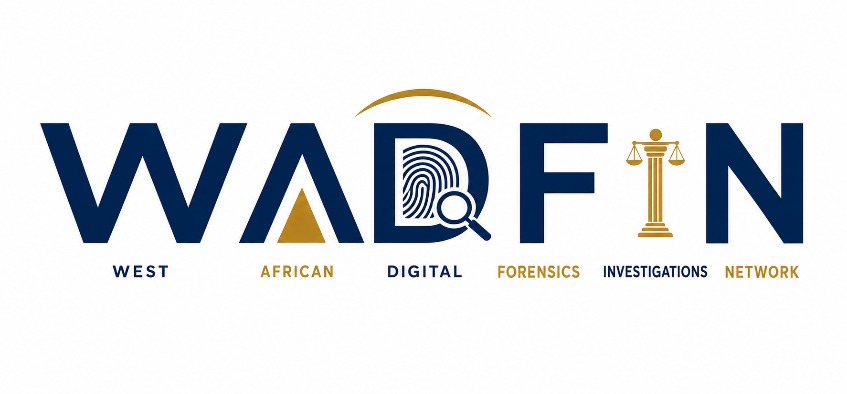

West African Digital Forensics & Investigations Network
WhatsApp: +44 7012 346652
• Telephone: 833853607

☰
Home
About
Our Work
Research & Resources
Membership
Partnerships
Governance & Ethics
Contact
Join WADFIN
Partner With Us
Page not found
The page you requested could not be found.
Return home